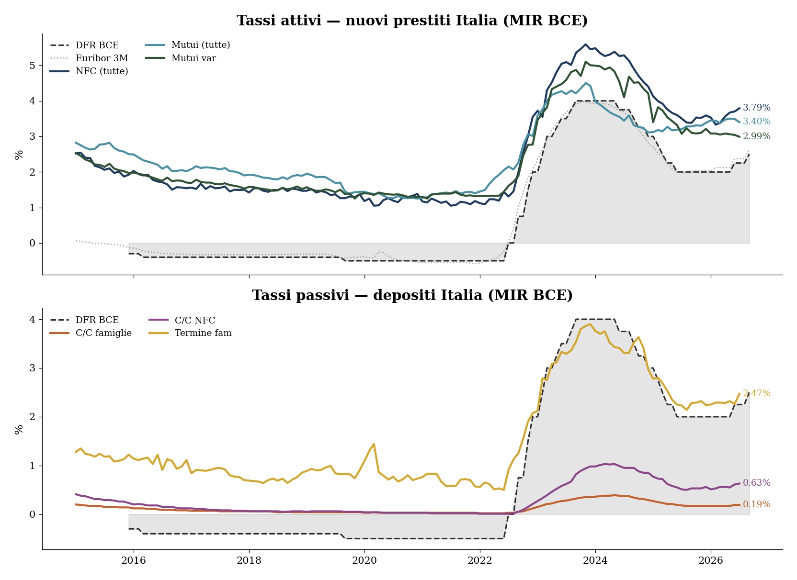
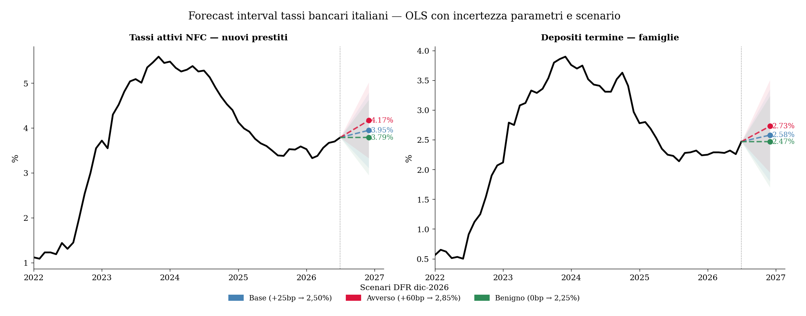

Tassi bancari italiani — dove andremo nel secondo semestre 2026
Previsione luglio–dicembre 2026 basata sui dati MIR della BCE
Paolo Volterra ![]()
La BCE ha alzato il tasso di riferimento a 2,25% a giugno 2026. Gli analisti si aspettano altri uno-due rialzi entro fine anno. Questa analisi stima l’impatto sui tassi bancari italiani: mutui variabili su di circa 14bp, fissi su di 23bp; i depositi a vista restano fermi (β ≈ 5%), mentre i depositi a termine si adeguano (β ≈ 43%). I dati mostrano una vischiosità marcata dei soli conti correnti italiani.
tassi, mutui, depositi, BCE, DFR, pass-through, H2 2026
HUB TASSI 2026 Previsioni Glossario Guida Stress Test Canali dati BCE · MIR Italia
1 La risposta in una tabella
La domanda è semplice: quando la BCE alza i tassi, le banche italiane trasferiscono l’aumento ai clienti — e se sì, in quanto tempo?
La risposta empirica è: sì per i prestiti; quasi no per i depositi a vista, in misura rilevante per quelli a termine.
| Tasso | Oggi (%) | Dic-2026 Base | Variazione | Dic-2026 Avverso | Quando cambia | Metodo |
|---|---|---|---|---|---|---|
| DFR BCE | 2.50 | 2.75 | +25bp | 3.10 | Decisione BCE | SCENARIO |
| Euribor 3M | 2.62 | 2.87 | +25bp | 3.22 | Segue DFR | SCENARIO |
| Mutui variabili | 2.99 | 3.13 | +14bp | 3.33 | Luglio–ago 2026 | OLS |
| Mutui fissi | 3.56 | 3.81 | +25bp | 3.87 | Graduale, 6–12 mesi | IRS |
| Prestiti imprese (breve) | 3.73 | 3.89 | +16bp | 4.11 | Luglio–ago 2026 | OLS |
| Prestiti imprese (lungo) | 3.97 | 4.07 | +10bp | 4.21 | 2–3 mesi | OLS |
| Depositi c/c famiglie | 0.19 | 0.22 | +3bp | 0.24 | Quasi niente | ECM |
| Depositi vincolati | 2.47 | 2.66 | +19bp | 2.88 | Quasi niente | ECM |
Tabella 1: Previsione tassi bancari italiani — dati al 2026-07-01 · scenario base: DFR → 2.75% · avverso: DFR → 3.10%
2 Come funziona la trasmissione
Quando la BCE muove il DFR, il segnale arriva ai tassi bancari in due fasi.
Fase 1 — immediata (1-2 mesi): i tassi variabili si aggiustano subito perché i contratti sono esplicitamente agganciati all’Euribor (che segue il DFR entro settimane).
Fase 2 — graduale (mesi e anni): la banca rivede le condizioni dei nuovi contratti, ma lo fa lentamente — soprattutto sui depositi a vista, dove non ha incentivo a farlo se i clienti non spostano i soldi; sui depositi a termine, dove la concorrenza è più attiva, l’adeguamento è più marcato (β ≈ 0,43).

Serie storiche 2015–2026: DFR BCE vs tassi attivi e passivi italiani (MIR)
Il grafico mostra chiaramente il problema: dal 2022 al 2024 il DFR è passato da -0,5% a 4,0% (+450bp). I tassi sui prestiti hanno seguito; tra i depositi, quelli a vista sono rimasti fermi, mentre quelli a termine hanno recuperato nel tempo.
3 Chi prende a prestito: mutui e imprese
| Tasso | Oggi | Base | Avverso | Benigno | β (pass-thru) | Metodo |
|---|---|---|---|---|---|---|
| Mutui variabili | 2.99% | 3.13% | 3.33% | 2.99% | 0.57 | OLS |
| Mutui fissi | 3.56% | 3.81% | 3.87% | 3.74% | 0.29 | IRS |
| Mutui (media) | 3.40% | 3.48% | 3.60% | 3.40% | 0.33 | OLS |
| Prestiti imprese breve | 3.73% | 3.89% | 4.11% | 3.73% | 0.64 | OLS |
| Prestiti imprese lungo | 3.97% | 4.07% | 4.21% | 3.97% | 0.41 | OLS |
| Prestiti imprese (media) | 3.79% | 3.95% | 4.17% | 3.79% | 0.64 | OLS |
Tabella 2: Tassi attivi — previsione dic-2026 per tre scenari DFR
Mutui variabili: reagiscono in 1-2 mesi. Un rialzo BCE di +25bp porta i mutui var a circa 3,25%, con un aggravio mensile di circa 15-20€/mese su 100.000€ di mutuo.
Mutui fissi: seguono il Bund tedesco a 10 anni (attualmente 3,04%), non il DFR. Se il Bund sale di +15bp (meno del DFR), i fissi salgono moderatamente a ~3,80%. Chi ha già un mutuo fisso non è toccato — vale solo per i nuovi contratti.
Prestiti alle imprese: quelli a breve (Euribor-linked) salgono subito. Quelli a lungo termine salgono meno perché in parte a tasso fisso.
4 Chi deposita: conti correnti e vincolati
| Deposito | Oggi | Base (+25bp) | Avverso (+60bp) | β breve | β lungo (ECM) | Tempo ½ ajust |
|---|---|---|---|---|---|---|
| C/C famiglie | 0.19% | 0.22% | 0.24% | 0.052 | 0.064 | 7.0m |
| C/C imprese | 0.63% | 0.62% | 0.67% | 0.121 | 0.188 | 3.5m |
| Depositi vincolati famiglie | 2.47% | 2.66% | 2.88% | 0.430 | 0.627 | 1.6m |
Tabella 3: Tassi passivi — vischiosità dei conti correnti confermata dai dati 2015–2026
Il problema della vischiosità (dei conti correnti): la BCE paga alle banche il 2,25% sui depositi overnight. Le banche pagano ai correntisti italiani lo 0,19%. La differenza (~2%) è margine bancario puro. Nello scenario base questo divario si allarga ancora (+1bp ai conti correnti, +16bp ai prestiti).
Perché le banche non alzano i conti correnti? Perché non devono: i correntisti italiani non spostano i soldi anche quando il rendimento è bassissimo. La concorrenza su questo comparto è quasi assente. Sui depositi a termine, invece, la concorrenza è attiva e il pass-through è significativo (β ≈ 0,43): qui la banca deve muoversi per trattenere la raccolta vincolata.

Fan chart — proiezione tassi NFC e depositi termine con tre scenari DFR
5 I tre scenari
| Scenario | DFR dic-2026 | Euribor 3M (est.) | Mutui var | C/C famiglie |
|---|---|---|---|---|
| Base (+25bp → 2,50%) | 2.75% | 2.87% | 3.13% | 0.22% |
| Avverso (+60bp → 2,85%) | 3.10% | 3.22% | 3.33% | 0.24% |
| Benigno (0bp → 2,25%) | 2.50% | 2.62% | 2.99% | 0.20% |
Tabella 4: Scenari DFR e impatto sui tassi chiave
Scenario base (+25bp): probabile se l’inflazione scende verso il 2% come atteso da BCE e mercati.
Scenario avverso (+60bp): possibile se l’energia torna a salire (Hormuz, geopolitica), l’HICP non converge, o se i mercati prezzano un ciclo di rialzi più lungo. In questo caso i mutui variabili toccano 3,43% e le imprese pagano di più sul debito a breve.
Scenario benigno (fermo): possibile se il PIL area euro scende sotto lo 0% per due trimestri (tecnica recessione) o se lo shock geopolitico si risolve rapidamente.
6 Le variabili che il modello non vede
Il modello usa il DFR come unica variabile. Nella realtà i tassi bancari dipendono anche da:
| Variabile | Livello attuale | Meccanismo | Implicazione |
|---|---|---|---|
| Spread BTP-Bund | ~82bp (apr-2026) | Rischio paese → costo raccolta banche IT più alto | Se sale oltre 150bp: pressione al rialzo sui tassi attivi |
| Brent | ~$80/bbl | Energia → inflazione → BCE deve alzare di più | Scenario IS: Q3=$88, Q4=$78 → moderato |
| BLS (credito) | restrittivo | Disponibilità delle banche a prestare | Banche più caute → condizioni più dure anche senza DFR |
| Concorrenza depositi | bassa | BTP retail, fintech, postale | Se aumenta: banche costrette ad alzare c/c e termine |
Tabella 5: Variabili esterne non incluse nel modello DFR-pass-through
Connessione con il Nowcasting (20260311_Nowcasting): il Nowcasting usa Brent e TTF come indicatori anticipatori della domanda di credito PMI. Tassi bancari più alti comprimono la domanda → il Nowcasting cattura la frenata con 6-12 mesi di anticipo rispetto ai dati ufficiali.
7 Come funziona il modello (per chi vuole capire)
7.1 Il coefficiente β: quanto si trasmette
Per ogni tasso bancario, misuriamo quanto è cambiato storicamente quando il DFR cambiava. Esempio: quando il DFR sale di 1% (+100bp), i mutui variabili salgono di circa 0,59% (+59bp). Questo coefficiente si chiama β e vale tra 0 (niente trasmissione) e 1 (trasmissione totale).
| Tasso | β immediato (OLS) | β lungo (ECM) | β letteratura | Lag risposta |
|---|---|---|---|---|
| Prestiti imprese (media) | 0.64 | 0.89 | 0.90 | 1 mesi |
| Prestiti imprese breve | 0.64 | 0.90 | 0.95 | 1 mesi |
| Prestiti imprese lungo | 0.41 | 0.63 | 0.75 | 3 mesi |
| Mutui (media) | 0.33 | 0.54 | 0.65 | 2 mesi |
| Mutui variabili | 0.57 | 0.74 | 0.80 | 1 mesi |
| Mutui fissi | 0.29 | 0.47 | 0.50 | 0 mesi |
| C/C famiglie | 0.05 | 0.06 | 0.25 | 0 mesi |
| C/C imprese | 0.12 | 0.19 | 0.30 | 4 mesi |
| Depositi vincolati | 0.43 | 0.63 | 0.60 | 2 mesi |
Tabella 6: Coefficienti β di pass-through: immediato (OLS) vs lungo periodo (ECM) vs letteratura
Perché i β dei depositi a vista sono così bassi rispetto alla letteratura? Perché il ciclo 2015-2022 era a tassi zero o negativi: i conti correnti erano già fermi a 0% e non potevano scendere ulteriormente (il “floor” a zero comprime il β stimato). Anche in un ciclo “normale” il pass-through sui conti correnti italiani resta contenuto. I depositi a termine, con β ≈ 0,43, sono invece in linea con la letteratura.
7.2 Il modello ECM: l’aggiustamento nel tempo
Il β immediato misura solo il primo mese. L’ECM (Error Correction Model) misura quanta parte dell’aggiustamento avviene nel corso dei mesi successivi.
| Tasso | Velocità γ | Metà correzione in | Gap attuale | Coint. p-value |
|---|---|---|---|---|
| Prestiti imprese (media) | -0.315 | 2 mesi | +2bp | 0.125 |
| Prestiti imprese breve | -0.301 | 2 mesi | -3bp | 0.196 |
| Prestiti imprese lungo | -0.312 | 2 mesi | -33bp | 0.074 |
| Mutui (media) | -0.034 | 20 mesi | +18bp | 0.307 |
| Mutui variabili | -0.395 | 1 mesi | -48bp | 0.676 |
| Mutui fissi | -0.031 | 22 mesi | +34bp | 0.136 |
| C/C famiglie | -0.094 | 7 mesi | -3bp | 0.077 |
| C/C imprese | -0.178 | 4 mesi | +7bp | 0.024 |
| Depositi vincolati | -0.348 | 2 mesi | -4bp | 0.000 |
Tabella 7: ECM — velocità di aggiustamento verso l'equilibrio di lungo periodo
Gap attuale: quanto ogni tasso è sopra (+) o sotto (-) il livello che il modello prevede in equilibrio con il DFR corrente. Un gap negativo significa che il tasso non ha ancora assorbito completamente i movimenti passati del DFR.
8 Approfondimenti
Quattro documenti satellite completano questo hub con analisi specializzate:
| Documento | Contenuto | Per chi |
|---|---|---|
| Glossario | Tutte le sigle — DFR, Euribor, β, ECM, TLTRO, permacrisi, … | Chi legge e vuole capire i termini |
| Guida per non specialisti | Come si costruisce una previsione E2E in 7 passi, con numeri concreti | Chi vuole capire il metodo dall’inizio |
| Stress test e permacrisi | Scenari estremi, β non lineare, Scenario Stress IV (DFR 3,25%) | Chi vuole capire i rischi oltre il modello |
| Canali di trasmissione | Gli 8 canali che il β lineare non cattura — letteratura e mappa operativa | Chi vuole capire i meccanismi strutturali |
9 Note metodologiche
- Dati: MIR BCE (serie italiane, nuovi contratti), scaricati via
ecbdata. Ultimo rilascio: 2026-07-01. - Modelli: OLS su differenze prime (β immediato, ciclo 2022-2026) + ECM Engle-Granger (β di LR, 2015-2026).
- Uso ECM: proiezione centrale solo se
coint_p <= 0,10e half-life entro 12 mesi; altrimenti ECM è diagnostico e il report usa OLS. - Tassi fissi: calibrazione su Bund 10Y invece di DFR (R² da 0,17 a 0,76 per mutui fisso).
- Euribor 3M: FRED
IR3TIB01EZM156Nfino a gen-2026, poi proxy DFR+12bp. - Snapshot:
OUT/hub_snapshot_latest.json; la nuova pipeline esporta snapshot v5 con timestamp. - Nowcasting:
20260311_Nowcasting/nowcast.ipynb— previsione volumi credito PMI (complementare).
Trasparenza sull’uso dell’intelligenza artificiale
L’uso di strumenti di intelligenza artificiale generativa è dichiarato esplicitamente in quanto parte del processo di lavoro seguito nella redazione del presente documento. Tali strumenti sono stati impiegati a supporto della lettura, della sintesi, della riorganizzazione argomentativa e della revisione testuale, sempre nell’ambito di un processo pienamente controllato dall’autore.
La responsabilità per le fonti utilizzate, le analisi condotte, le verifiche effettuate, le interpretazioni proposte e le conclusioni formulate resta interamente in capo all’autore.
L’intelligenza artificiale è stata utilizzata come ambiente di supporto cognitivo ed editoriale, non come fonte primaria, autore autonomo o sostituto del giudizio critico.